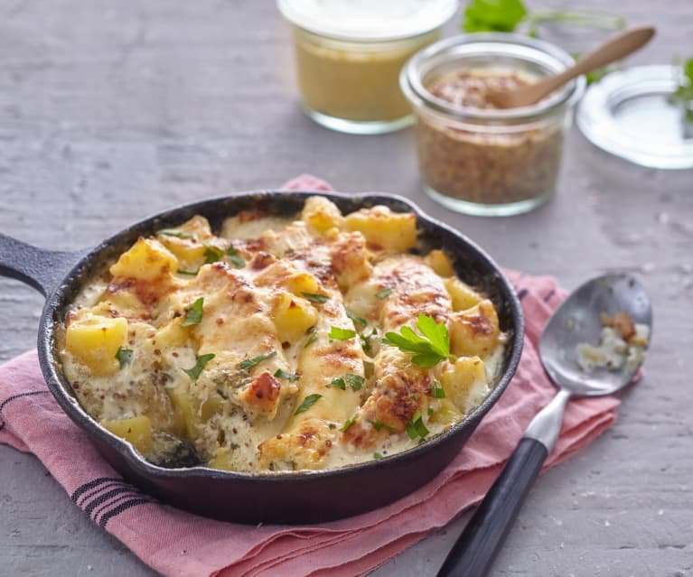

Gratin de pommes de terre et filet de dinde
Ingredients
- 50 g de comté
- 1 oignon
- 500 g d'eau
- 1 cube de bouillon
- 650 g de pommes de terre à chair ferme
- 600 g de filets de dinde
- sel
- poivre
- 220 g de crème fraîche épaisse
- 1 c. à s. de moutarde
- 1 c. à s. de moutarde à l'ancienne
- 1 c. à s. de persil
- salade verte

Préparation
Étape 1
Mettre 50 g de comté dans le bol et râper 10 sec/vitesse 10. Réserver.
Étape 2
Mettre 1 oignon et hacher 5 sec/vitesse 5. Transvaser dans le panier cuisson.
Étape 3
Mettre 500 g d'eau et 1 cube de bouillon dans le bol. Ajouter dans le panier 650 g de pommes de terre à chair ferme en dés. Mettre 600 g de filets de dinde en lamelles sur le plateau vapeur avec 2 pincées de sel et de poivre. Cuire à la vapeur 25 min/Varoma/vitesse 1.
Étape 4
Préchauffer le four à 220ºC. Ne garder que 75g de bouillon dans le bol.
Étape 5
Mettre pommes de terre et oignon dans un plat, et recouvrir de dinde.
Étape 6
Ajouter au bouillon 220 g de crème fraîche épaisse, 1 c. à s. de moutarde, 1 c. à s. de moutarde à l'ancienne, 1 c. à s. de persil, 2 pincées de sel et de poivre. Mélanger 20 sec/vitesse 4.
Étape 7
Napper la dinde de sauce, saupoudrer de comté et gratiner 20min. Servir avec une salade verte.